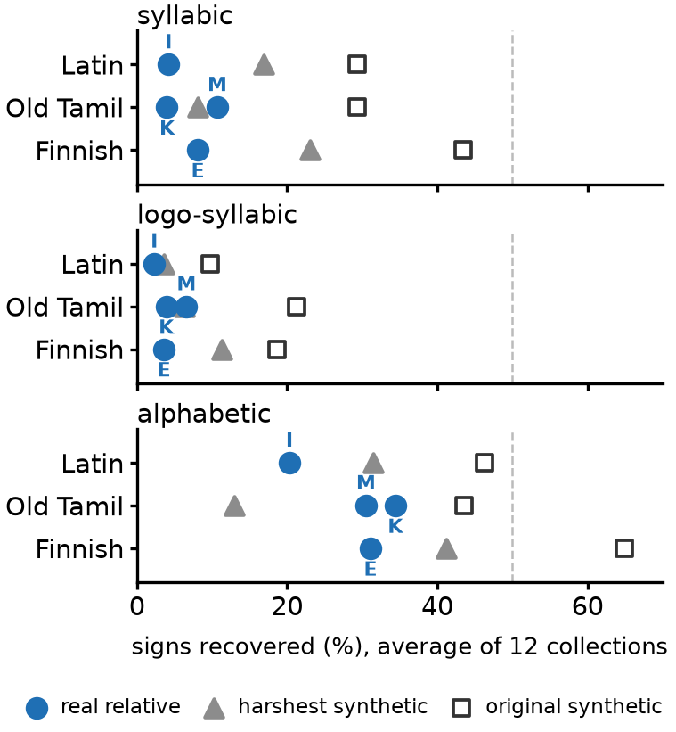

In my first study, the methods did much better when given a related language, but that relative was one I built from the same text as the hidden language, so it was far closer than any real relative could be. Does a real related language, written in a different text, help as much?
I gave the methods real relatives: Dante's Italian for Latin, Estonian (the epic Kalevipoeg) for Finnish, and Malayalam and Kannada for Old Tamil. The sound correspondences used to score the answers come from published sources: Grandgent (1907) for Latin and Italian, Caldwell (1875) for the Dravidian languages, and Pajusalu (2012) for Finnish and Estonian. The test collections were the same Indus-like ones as before (2,906 texts of about 4.6 signs). I wrote down the procedure and how I would read the results before running anything.

Signs recovered with each related language, by script type: real relatives (I Italian, M Malayalam, K Kannada, E Estonian) against my two synthetic relatives, the original and the harshest. Averages over 12 test collections; dashed line: 50%. On logographic scripts every real relative recovered almost nothing (0.0-0.2%).
The Finnish-Estonian correspondence table is weak: the paper I used has no full table, so I built it from the 10 word pairs it prints, which cover 13 of 27 Finnish letters. The other sources are old (1875 and 1907). There are only four pairs, from three hidden languages, and each relative is a single text of a different period and genre, so the language and the text cannot be separated. Some reporting decisions were made after seeing the results, and they are labelled as such. A confirmatory run on fresh test collections, with every reading fixed in advance, is still to come.
A real related language helps much less than the synthetic one I first used, and for the script types closest to Indus it barely helps at all at these text lengths. Results that assume a close relative should be read as a best case.
All numbers here come from synthetic test collections I built, not from real Indus inscriptions. The full report is available on request: arnavgoel@woodstock.ac.in